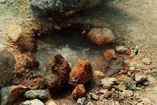
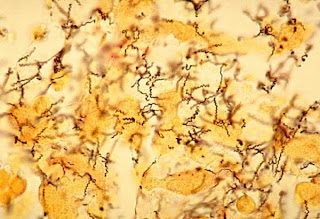
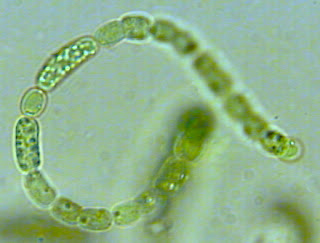
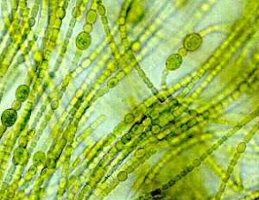
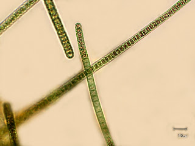

เเบ่งออกเป็น 2 กลุ่มใหญ่ คือ อาณาจักรย่อยอาร์เคียแบคทีเรีย (Archaebacteria) และ อาณาจักรย่อยยูแบคทีเรีย
(Eubacteria)
ลักษณะโดยรวม : เป็นสิ่งมีชีวิตเซลล์เดียวแบบโพรคาริโอต มีขนาด 1-10 ไมโครเมตร มีเส้นผ่านศูนย์กลาง 0.5-5
ไมโครเมตร ไม่มีเยื่อหุ้มนิวเคลียส ไม่มีออร์แกเนลล์ที่มีเยื่อหุ้ม มีแต่ออร์แกเนลล์ที่ไม่มีเยื่อหุ้ม คือ
ribosome ชนิด 70s และมีสารพันธุกรรมอยู่ในไซโทพลาสซึม เรียกว่า นิวคลีออยด์
ส่วนใหญ่อาศัยอาหารจากสิ่งมีชีวิตอื่น บางชนิดอยู่เป็นอิสระ หรือดำรงชีวิตแบบ saprophyte บางชนิดเป็นปรสิต
เป็นแบคทีเรียที่ผนังเซลล์ไม่มีสารเพปทิโดไกลแคน
สามารถดำรงชีวิตในสภาพแวดล้อมที่สิ่งมีชีวิตกลุ่มอื่นอาจไม่สามารถดำรงอยู่ได้ เช่น ในแหล่งน้ำพุร้อน
ทะเลที่มีน้ำเค็มจัด ในบริเวณที่มีความเป็น
กรดสูง และบริเวณทะเลลึกเป็นต้น
แบ่งได้ออกเป็น 2 กลุ่ม คือ
1.1) กลุ่มครีนาร์เคียโอตา
ชอบอุณหภูมิสูง และกรดจัด
1.2) กลุ่มยูริอาร์เคียโอตา
สร้างมีเทน และชอบความเค็มจัด
ยูแบคทีเรียเป็นแบคทีเรียที่สามารถพบได้ทั้งในดิน น้ำ อากาศ อาหาร นม และในร่างกายของสิ่งมีชีวิตอื่น สามารถพบได้ทั้ง ในน้ำเค็ม น้ำจืด น้ำกร่อย ในธารน้ำแข็ง หรือแม้กระทั่งแหล่งน้ำพุร้อน เป็นต้น นอกจากนี้ยูแบคทีเรียมีกระบวนการเมแทบอลิซึมในการดำรงชีวิตที่หลากหลาย จึงอาจกล่าวได้ว่าเป็นสิ่งมีชีวิตที่มีบทบาทสำคัญต่อระบบนิเวศ ยูแบคทีเรียแบ่งเป็นกลุ่มใหญ่ๆดังนี้
2.1) กลุ่มโพรทีโอแบคทีเรีย (Proteobacteria)
พบมากที่สุด และมีกระบวนการเมแทบอลิซึมที่หลากหลายบางกลุ่มสามารถสังเคราะห์ด้วยแสงได้
บางกลุ่มสามารถดำรงชีวิตโดยใช้ไฮโดรเจนซัลไฟด์ และให้ซัลเฟอร์ในกระบวนการสังเคราะห์ด้วยแสง
2.2) กลุ่มคลาไมเดีย (Chlamydias)
เป็นปรสิตในเซลล์ และทำให้เกิดโรคติดต่อทางเพศสัมพันธ์ เช่น โรคโกโนเรีย หรือหนองใน เป็นต้น
2.3) กลุ่มสไปโรคีท (Spirochetes)
มีรูปทรงเกลียว มีความยาวประมาณ 0.25 มิลลิเมตร
มีทั้งดำรงชีวิตแบบอิสระ และบางสปีชีส์เป็นสาเหตุของ โรคซิฟิลิส โรคฉี่หนู เป็นต้น
2.4) แบคทีเรียแกรมบวก (Gram-Positive Bacteria)
แพร่กระจายทั่วไปในดิน อากาศ บางสปีชีส์สามารถผลิตกรดแลกติกได้ เช่น Lactobacillus sp.
ใช้ในอุตสาหกรรมอาหารหลายชนิด เช่น การทำเนย ผักดอง และโยเกิร์ต เป็นต้น
บางสปีชีส์ เช่น Streptomyces sp. ใช้ยาทำปฏิชีวนะ เช่น ยาสเตร็บ โตมัยซิน ยาเตตราไซคลิน เป็นต้น
บางสปีชีส์ เช่น Bacillus sp. สามารถสร้างเอนโดสปอร์ (endospore)
ทำให้ทนทานต่อสภาพแวดล้อมที่
ไม่เหมาะสมได้ดี และบางชนิดเป็นสาเหตุทำให้เกิดโรคแอนแทรกซ์
อีกกลุ่มหนึ่งไม่มีผนังเซลล์มีเพียงเยื่อหุ้มเซลล์ที่ประกอบด้วยชั้นของไขมัน ได้แก่
ไมโคพลาสมา (mycoplasms) เป็นเซลล์ที่มีขนาดใหญ่ที่สุดประมาณ 0.2-0.3 ไมโครเมตร
สามารถเจริญ และสืบพันธุ์ได้นอกเซลล์โฮสต์ ส่วนใหญ่ไม่ก่อให้เกิดอันตรายต่อสิ่งมีชีวิตอื่น
แต่มีบางสปีชีส์ที่เป็นสาเหตุให้เกิดโรคปอดบวมในคนและวัว
2.5) ไซยาโนแบคทีเรีย (Cyanobacteria)
สามารถสังเคราะห์ด้วยแสงได้ มีสารสีอยู่ภายในถุงแบนๆที่มีเยื่อหุ้มเซลล์
พบแพร่กระจายในสภาพแวดล้อมที่หลากหลายทั้งในแหล่งน้ำจืด น้ำเค็ม
บางสปีชีส์พบในบ่อน้ำพุร้อน
และภายใต้น้ำแข็งของมหาสมุทร เป็นต้น
จากหลักฐานซากดึกดำบรรพ์ทำให้นักวิทยาศาสตร์คาดคะเนได้ว่า
ไซยาโนแบคทีเรียทำให้ออกซิเจนในบรรยากาศมากขึ้นในโลกยุคนั้น
และก่อให้เกิดวิวัฒนาการของสิ่งมีชีวิตที่หายใจโดยใช้ออกซิเจนในปัจจุบัน
Anabaena Nostoc Oscillatoria


